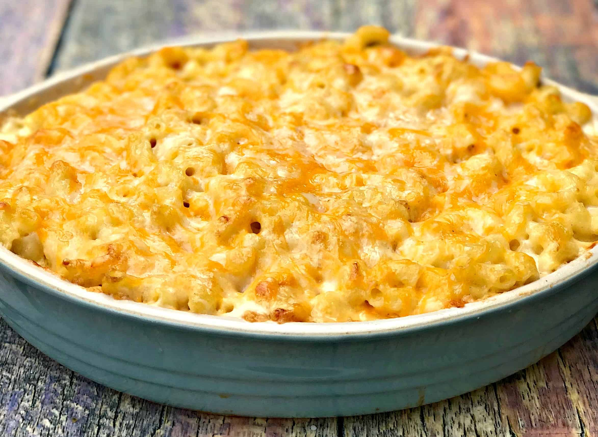
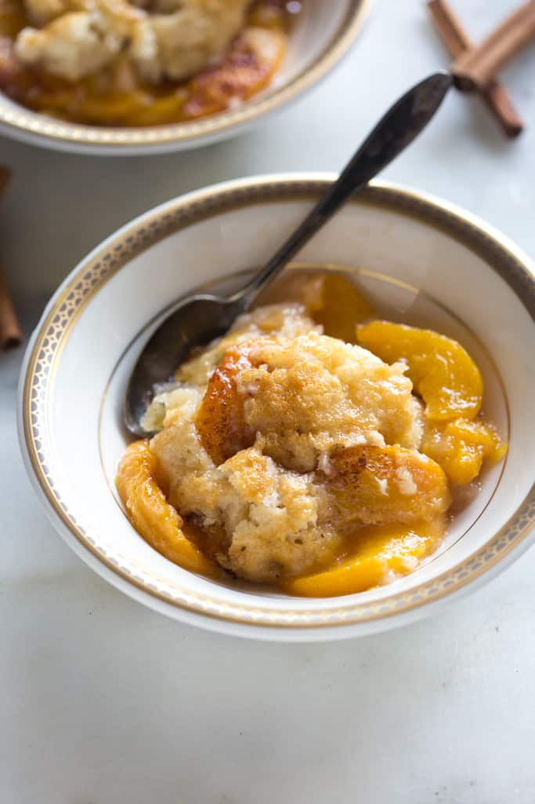
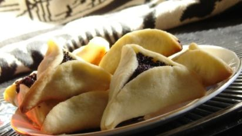

Grandma Rosie's Banana Bread
Home/Recipes/Sweet & Cakes
After my roommates and I bought some bananas and then proceeded to forget about them for about a week, banana bread was the route for us!
At the time, I didn't have the recipe, or any of Grandma Rosie's recipes for that matter, so I used a recipe that I found online.

What You'll Need:
Directions:
- In a large bowl, cream the butter and sugar together. Soften the butter first, so that you can get a fairly even mixture.
- Dissolve 1 teaspoon of baking soda with 1 tablespoon of water.
- Beat in an egg, mixing thoroughly before adding in your baking soda/water mix.
- Next, add the vanilla extract and salt. Keep mixing!
- If you haven't yet mashed your bananas, do that now, and then add them into the mix along with however much cinnamon you think feels right. I generally put about a teaspoon in.
- Now that all the "wet" ingredients are mixed, add flour and mix well, until there isn't any evidence of flour in the bowl and everything has come together into a fairly thick batter.
- At this point, consider what you want to add to this banana bread. I recommend mixing in chocolate chips or walnuts, or even both, if you're feeling bold.
- Finally, pour the mixture into a loaf pan and bake it at 350 degrees for 50 minutes to an hour, or until a toothpick poked into the center of the loaf comes out clean.
Related Recipes


